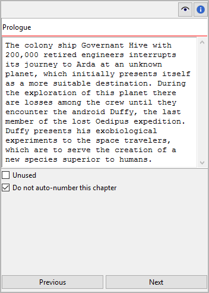

Kapitel/Teil-Rigenschaften
The Kapitel/part properties view opens in the right pane when you select a chapter or a part in the tree. You can edit the properties of the selected chapter or part.
Hinweis
You can change any chapter into a part or vice versa via the Change Level entry in the Kontextmenü, the Teil-Menü, or the Kapitel
-Menü.

Titel und Beschreibung
Titel und Beschreibung are displayed in an editable „Karteikarte“.
The editing of the Titel can be completed by pressing the Enter key.
Changes to the description are applied when the mouse is clicked
anywhere outside the text input field.
Bemerkung
Depending on your Buch settings, novelibre might overwrite the Titel the next time the tree is refreshed. Thus, you don’t need to edit the capter/part Titel, if auto numbering is activated and the selected chapter or part is not excluded from auto numbering (see below).
Unbenutzt
With te Unbenutzt checkbox, you can change the chapter type.
Dieses Kapitel/diesen Teil nicht automatisch nummerieren
If this checkbox is ticked, the selected chapter or part will be excluded from auto numbering, and the Titel you enter manually will persist.